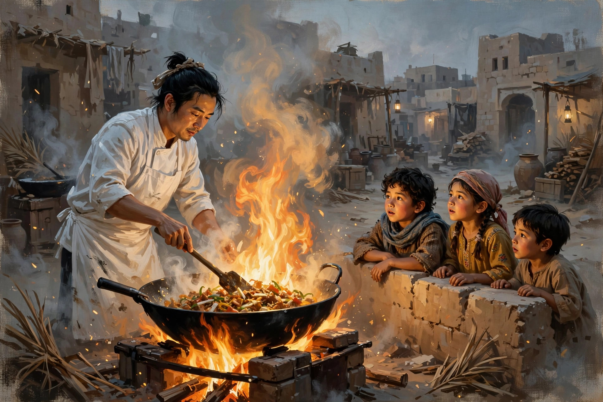
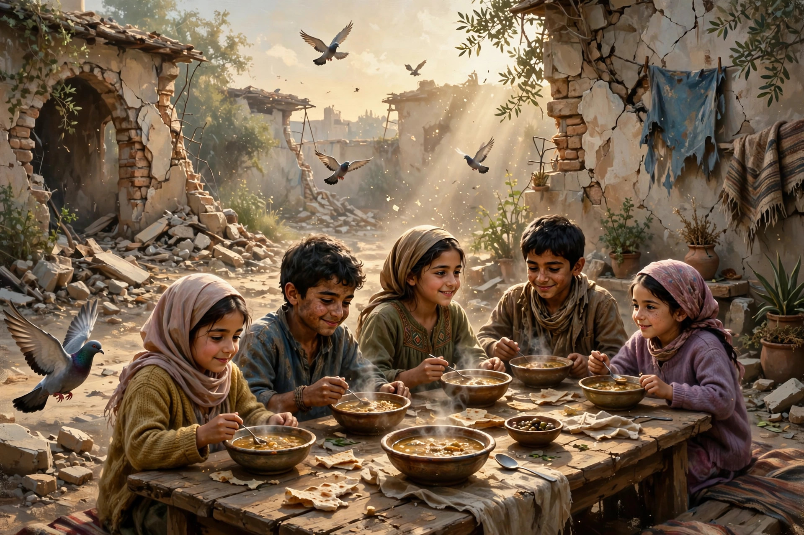

用美味拯救世界
欢迎点击上方名片关注我。您的支持是我坚持原创的最大动力。
《欢迎来到龙餐馆》上线流媒体，我第一时间看了。这次没去电影院支持国产，倒也不是刻意为之，主要是同档期好电影太多，这部电影不在我的首选罢了。还有一个原因，我之前去电影院看过沈腾的另一部电影《抓娃娃》，感觉不好，所以这次有点犹豫。

回到正题。看完电影后我消除了之前对这部电影的一些“预设性”误会。例如，这会不会是一部“战狼”式反美爽片？给还没看过本片的朋友一句话澄清，它既不“战狼”，也不反美，至少没有明显的这方面的迹象。要说“黑”谁多一些，影片貌似“黑”中东恐怖分子远多于美军。影片对美军的描写着墨不多，但总体上是中立的。美军中有Tony那样的普通底层士兵，也有发战争财、敲诈勒索的坏蛋（但坏蛋的戏份不多）。
至于我对影片的观感，确实好于预期，但并没有达到某些自媒体吹的水平。我知道这部影片的豆瓣评分及国内媒体口碑非常好，我这么说肯定少不了挨骂。但这是我个人的真实观影感受，没必要为了迎合主流观点说谎。下面我来具体讲讲我为什么会有这个观感。
影片没有像战狼那样“打鸡血”，搞宏大叙事，蹭“爱国流量”，这是首先值得肯定的地方。更加值得肯定的是，本片将国产片的国际格局整体提高了一个档次。着眼于属于人权重要一部分的儿童权利，关注受到战争影响的儿童群体。据我所知，这是兼具国际视野和普世价值观的第一部国产片，算是国产片在这方面零的突破。可喜的是，从此以后，我们也有了类似《辛德勒的名单》的反战作品。希望这只是开始，而不是结束。
本片的另一个优点是角色不论戏份大小，都很有辨识度和立体感。角色塑造的成功，可以说是一部影片讲好故事的基础。
主角沈腾演的东北厨子自不必说，人物饱满生动，极具个性。近几年沈腾的演技日臻成熟，算是成功树立了自己的IP。沈腾从小品起家，演过的电影角色也以底层小人物为主。但小人物其实是最难演的，没有足够的生活经验和阅历，很难“接地气”，演出人物的真实感。沈腾有着东北人对待生活特有的豁达和幽默。但他绝不千篇一律套用同一种风格，而是把每个角色的身份和个性吃透。简单说，就是演啥像啥。本片中他演的东北厨子，就是一个为了家人过上更好的生活而远赴异国他乡谋生的普通人。他本想攒够了钱就回家，没想到卷入战争，几度陷入险境。好在他凭着过硬的手艺、几分机灵和运气，居然几次逢凶化吉（主角光环是少不了的）。

另一位主角蒋奇明属于新生代演员中进步很快的。从《漫长的季节》开始认识他，就觉得他颇有潜力。果然这几年他佳作不断，从配角稳扎稳打演到主角，也形成了鲜明的个人风格。在本片中他对角色的把握和演绎又上升了一个层次，令人刮目相看。甚至可以说抢了第一男主沈腾不少风光。他在片中饰演一位努力在异国打拼、希望扎根下来过上好日子的年轻人。不幸的是理想还没实现就遇到残酷的战争。在身陷恐怖分子营地时，他本可以明哲保身，逃出升天。但他偏偏有一颗天使般的赤子之心，对那些被恐怖分子当人肉炸弹利用的孩子们抱有深深的同情。虽然他最终没能完成拯救孩子们的计划，而惨死在“校长”的枪下。但他舍身取义的精神从灵魂深处触动了沈腾。可以说是他直接激发了沈腾从一个小人物到英雄的蜕变。
片中的几位配角也是可圈可点。如伊拉克水电部长，本来是个在战争夹缝中求生存的官僚，本性善良，顾家爱女，恪守做人的基本诚信和底线。后来因为对一个美军军官变本加厉的勒索说不，妻女惨遭杀害。自那以后，他消沉了一阵子突然黑化，加入恐怖主义组织（算不算某种意义的“落草为寇”？）。后来他在恐怖分子头子“校长”的指使下做了一些伤天害理的事。但最后关头他还是守住了一点良知，给曾经在他至暗时刻对他有过“一饭之恩”的沈腾留了一条生路。这个人物虽然是配角，但绝非凑数的。他的经历表明，在战争中，不但底层小人物处境凄惨，掌握一定资源和权力的中高层一样无法幸免。这个人物的塑造从侧面表现了战争的残酷性。
还有演沈腾徒弟的那位伊拉克小孩，演活了小孩的纯真，以及面临战争时的困惑和复杂心态。从天天和沈腾作对的小捣蛋鬼到大厨的高徒；从视美军为魔鬼必欲除之而后快，到脱离恐怖分子洗脑控制的魔爪，在他人的帮助和自己的努力下获得自由，走向新生，这个角色的成长令人心疼、动容和欣慰。
说了这么多优点，再来说说两个明显的缺点。
虽然影片取材于真实人物和事件，但有些设定上的硬伤让人如鲠在喉。首先，老外爱吃中餐这个设定早就过时了，还这么拍，恐怕只有从来没有出过国的人才信。如果这只是本片的背景设定倒还罢了，但这是贯穿全片的基本设定就有点别扭了。在很多国家都有中餐馆，这没毛病，但这并不是中餐“风靡世界"的证明。美军频繁光顾龙餐馆，其实并不是爱好中餐，不过是把这里当成酒吧罢了，并不表示人家稀罕中餐。更离谱的是，沈腾两次被抓，都从犯人摇身一变成为监狱的主厨。在美军监狱里大办宴席，在恐怖分子营地甚至为人操持婚宴。且不说这些场所动不动开席的可能性有多大，就说伊拉克人和美国人都那么爱中餐这个设定就让人感觉怪怪的。
再一个就是主角光环太夸张了。主角的原型虽然出入战争地区风险很大，但还没到危及生命的地步，更没有带领一堆孩子从恐怖分子营地完美逃脱的壮举。逃脱那段明显是“致敬”了《肖申克的救赎》，但肖申克里的安迪是个人出逃，而且为此计划了19年。而本片中，沈腾不过是一个毫无军事经验的厨子，居然可以临时计划就能带一堆孩子从地下管道出逃成功。这么编不知是嘲笑恐怖分子的智商，还是嘲笑观众的智商。当然后来他们被拦截了，稍微算回归了点真实。但接着，黑化水电部长让蒙着头的沈腾张嘴后开枪“处决”他的桥段更夸张了，那么近距离开枪，张嘴就能保证不死？这就太离谱了。我知道，这里的“张嘴”是对应之前沈腾对黑化部长“一饭之恩”的梗，但为了对应一个梗而强行解释沈腾的命大，过于牵强了。
不过，总的来说，本片还是凭反战主题走出了国产片的一条新路。片尾关于世界范围受战争影响儿童的数据触目惊心。一部电影如果能激起人们对战争的更深刻反思，那么它的现实价值可能远远大于它的艺术价值。